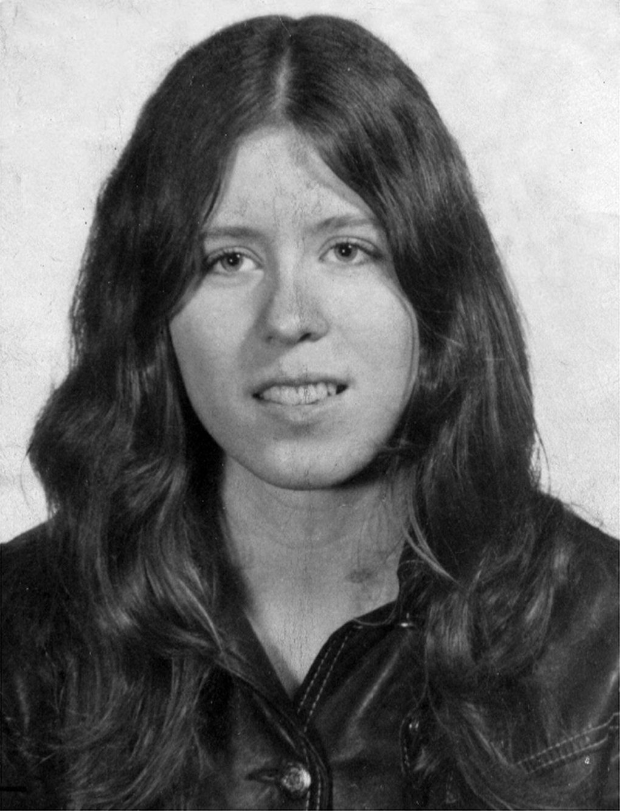
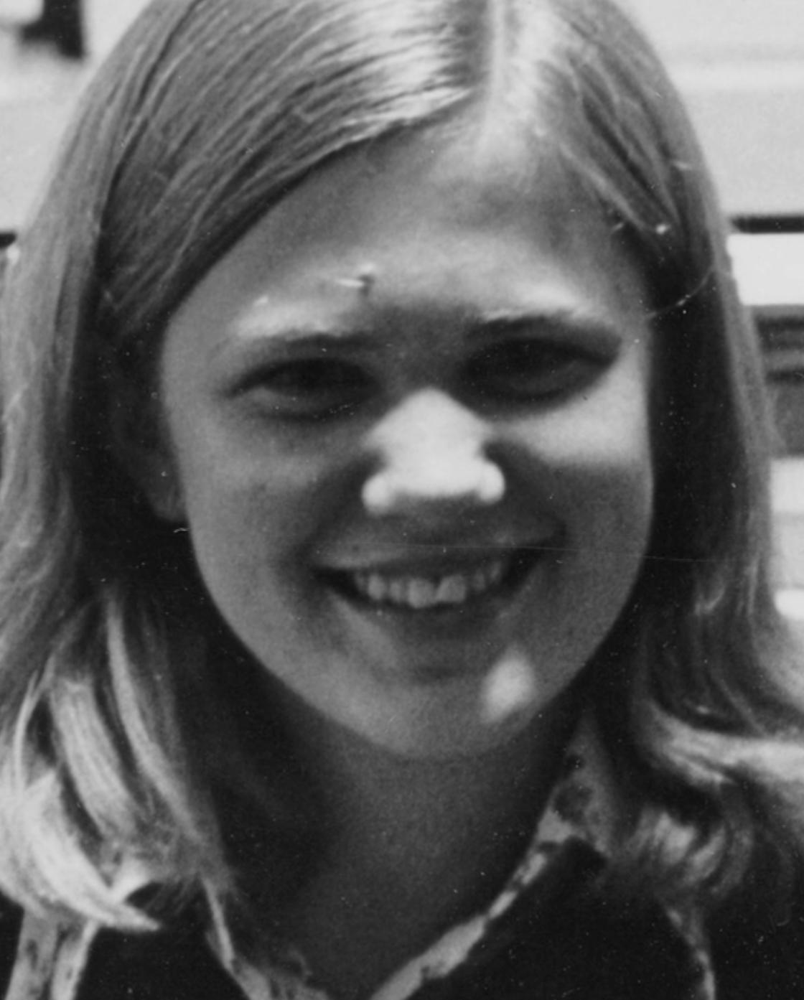
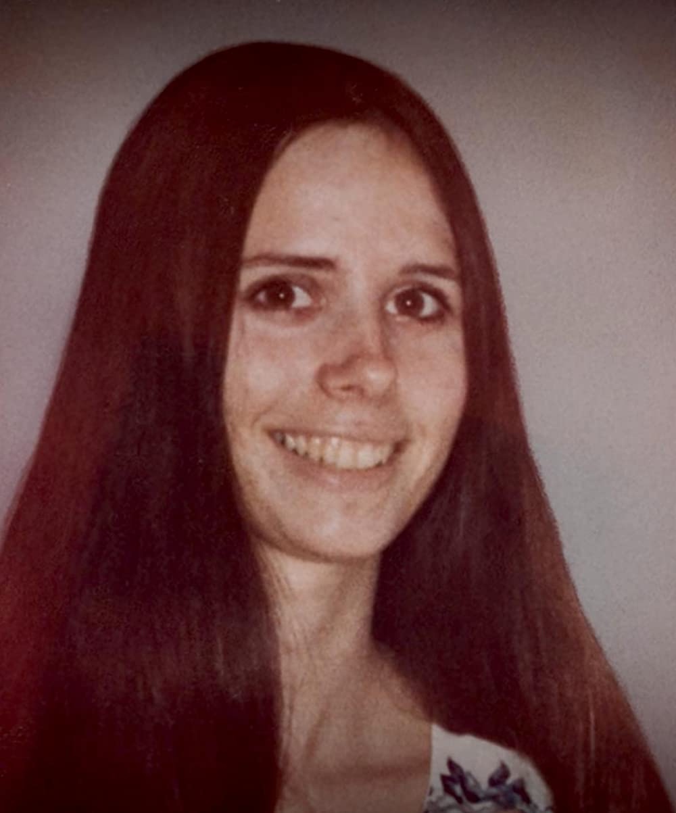
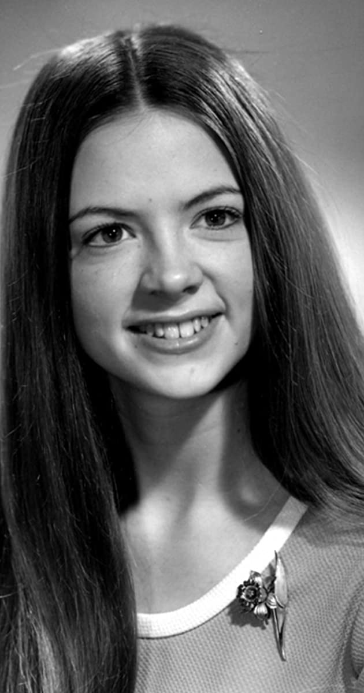
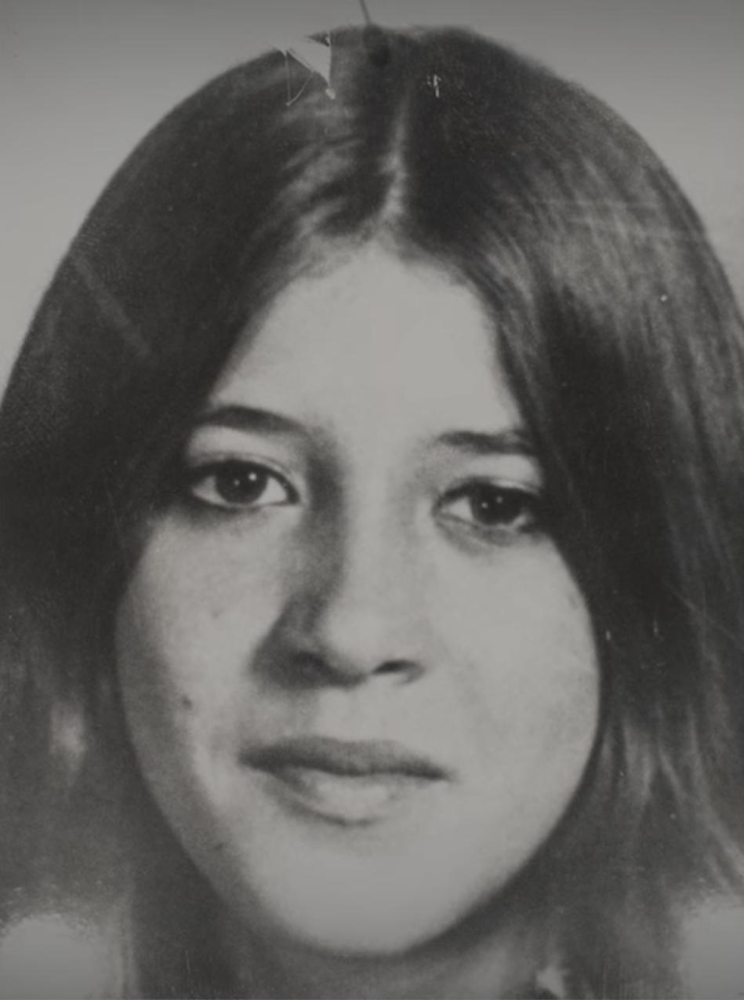
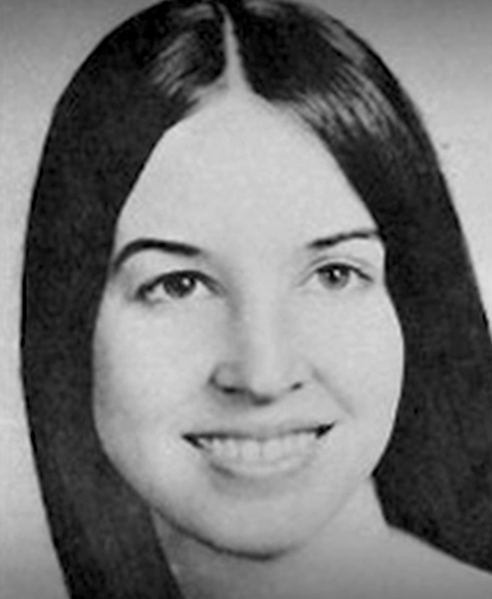
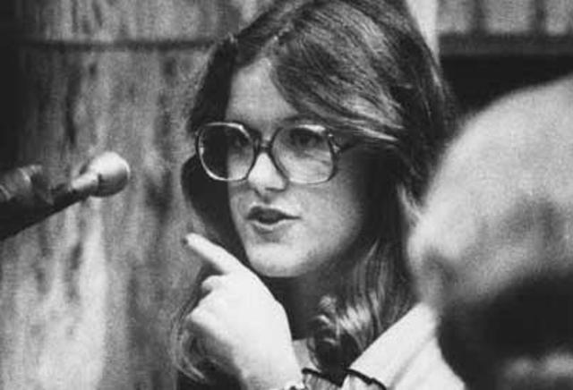

Ted zijn jeugd
Ted werd op 24 november 1946 geboren als Theodore Robert Cowell. Als kind vertoonde Ted reeds afwijkend gedrag: zijn tante Julia ontwaakte ooit na een middagdutje omringd door keukenmessen met de lemmeten in haar richting. Ted stond naast haar bed en lachte. In 1951 trouwt zijn moeder met Johnnie Bundy. Johnnie adopteerde Ted officeel. Hoewel Johhnie een emotionele band met zijn stiefzoon probeerde op te bouwen, bleef deze op afstand. Ted had al vroeg behoefte aan bezittingen. Bij het kopen van kleding trok hij zijn moeder steevast mee naar de duurdere merken. Hij begon met stelen en bleek daar uitermate gewiekst in te zijn. Bundy bleek een goede leerling op school. Hoewel hij later beweerde moeite met vriendschappen te hebben, beschreven oud-klasgenoten hem als een populaire jongen. Buiten school hield hij zich graag bezig met skiën. Omdat hij geen geld had voor goed skimateriaal, stal hij ski's en ook vervalste hij skipasjes voor toegang tot skigebieden. Toen hij achttien werd, kwam zijn jeugdstrafblad te vervallen, wat in veel Amerikaanse staten gebruikelijk is.
Het voertuig wat Ted altijd gebruikte voor zijn moorden
In dit voertuig heeft ted de meeste slachtoffers mee gelokt.
Ted werd opgepakt
Hij is mede door het veraden van zijn vriendin opgepakt
Karen Sparks (18)
Afgeslacht en seksueel misbruikt in haar bed terwijl ze sliep. OVERLEEFD!.
Lynda Ann Healy (21)
Doodgeslagen in haar slaap en ontvoerd, vervolgens onthoofd en in stukken gehakt. Onderkaak teruggevonden op Taylor Mountain site in 1975.

Donna Gail Manson (19)
Ontvoerd tijdens een wandeling naar een concert op het Evergreen State College. Lichaam achtergelaten op de plek van Taylor Mountain site.
Susan Elaine Rancourt (18)
Verdween na het bijwonen van een bijeenkomst van adviseurs op het Central Washington State College. Schedel en onderkaak teruggevonden op Taylor Mountain Site in 1975.
Roberta Kathleen Parks (22)
Verdewenen van de Oregon State University in Corvallis. Schedel en onderkaak teruggevonden op Taylor Mountain site in 1975.
Brenda Carol Ball (22)
Verdween na het verlaten van de Flame Tavern in Burien. Schedel en onderkaak teruggevonen op Taylor Mountain Site in 1975.
Georgaan Hawkins (18)
Ontvoerd uit een steegje achter haar studentenhuis. Skeletresten, geïdentificeerd door Bundy, teruggevonden op Issaquah site.
Janice Ann Ott (23)
Op klaarlichte dag ontvoerd uit Lake Sammamish State Park. Skeletresten teruggevonden op Issaquah site in 1974.
Denise Marie Naslund (19)
Ontvoerd vier uur na Ott uit hetzelfde park. Skeletresten teruggevonden uit Issaquah site in 1974.
Nancy Wilcox (16)
Verdween in Hollday, Utah. Lichaam begraven bij Capitol Reef National Park.
Melissa Anne Smith (17)
Verdwenen uit Midvale, Utah. Lichaam negen dagen later gevonden op een heuvel in Summit Park.
Laura Ann Aime (17)
Verdween uit Lehu, Utah. Lichaam ontdekt door wandelaars in American Fork Canyon.
Carol DaRonch (18)
Poging tot ontvoering in Murray, Utah. Ontsnapte uit Bundy's auto. OVERLEEFD!
Debra Jean Kent (17)
Verdween na het verlaten van een schoolvoorstelling in Bountiful. Lichaam achtergelaten in de buurt van Fairview.
Caryn Eileen Campbell (23)
Verdween uit een hotelgang in Snowmass. Lichaam 36 dagen later ontdekt op een onverharde weg nabij het hotel.
Julie Cunningham (26)
Verdween op weg naar een taverne in Vail. Lichaam begraven nabij Rifle.
Lynette Dawn Culver (12)
Ontvoerd uit Alameda Junior High School. Lichaam gegooid in wat de autoriteiten denken dat de Snake River is.
Susan Curtis (15)
Verdween tijdens een jeugdconferentie aan de Birgham Young University. Lichaam begraven bij Price.
Margaret Elizabeth Bowman (21)
Afgeslacht en daarna gewurgd terwijl ze sliep. Chi Omega Sorority.
Lisa Levy (20)
Afgeslacht, gewurgd en seksueel misbruikt terwijl ze sliep. Chi Omega Sorority.

Karen Chandler (21)
Afgeslacht terwijl ze sliep. Chi Omega Sorority. OVERLEEFD!
Kathy Kleiner (21)
Afgeslacht terwijl ze sliep. Chi Omega Sorority. OVERLEEFD!

Cheryl Thomas (21)
Afgeslacht terwijl ze sliep, acht blokken van Chi Omega. OVERLEEFD!
Kimberly Leach (12)
Ontvoerd van haar middelbare school in Lake City. Gemummificeerde resten gevonden bij Suwannee River State Park.

Ted is ontsnapt
Hij was uit het raam gesprongen
Ted op school
In 1965 kwam hij van highschool en vetrok met een beurs naar de University of Puget Sound in Tocoma om een studie Chinees te volgen. Na een jaar ging hij naar de University van Washington en ontmoete hij studente Stephanie Brooks. Hij viel als een blok voor haar. Hoewel Brooks hem aardig vond en een tijd een relatie met hem had, merkte ze dat hij soms loog, waar ze niet over te spreken was. Ted had zijn studie afgebroken en dat was een van de redenen van Brooks om de relatie af te blazen. Brooks ging terug naar California. Dit had een verwoestende uitwerking op Ted. Eenmaal terug in Seattle leerde hij Liz Kendall kennen. Hun relatie ontwikkelde zich aanvankelijk vrij normaal. Bundy begon in 1970 opnieuw te studeren en koos voor psychologie. Hij deed het goed en was geliefd bij zijn professoren. In 1971 werkte hij in het kader van zijn studie voor 2 dollar per uut bij een telefonische hulpdienst waar hij mensen in psychische nood te woord stond en een luisterend oor boden. Bij telefoontjes van mensen die dreigden van zichzelf te beroven. Zo heeft hij diverese mensenlevens gered, wat in het licht van Bundy's latere daden opmerkelijk is.Na zijn afstuderen in 1972 en in het bezit van een graad in de psychologie, kreeg hij een toelage om in het Harborview Hospital als counselor met psychiatrische patiënten te werken.
Ted had hier een drievoudige moord gepleegd
Hij was een studentenhuis binnen gedrongen en had 3 studenten vermoord